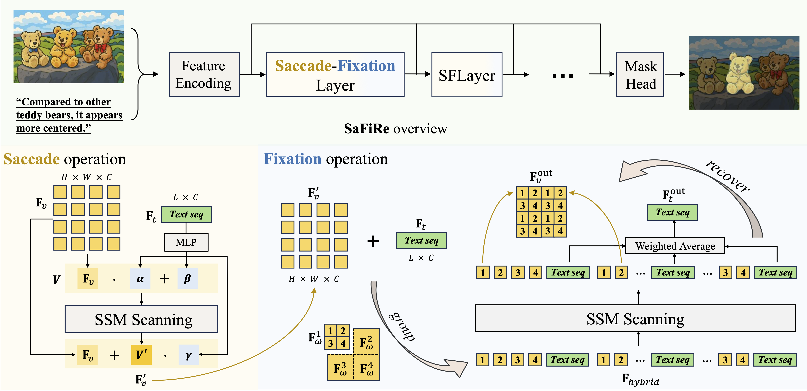
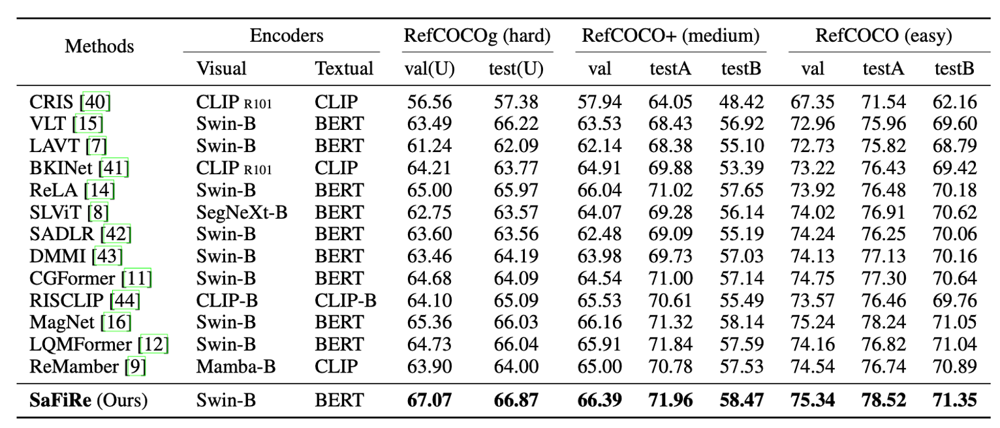
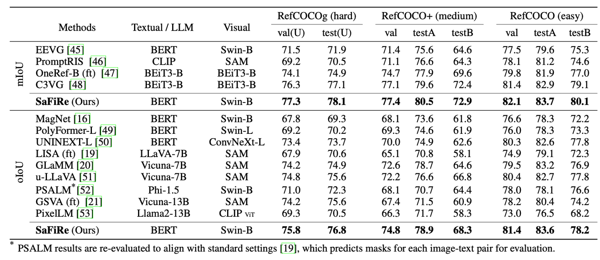
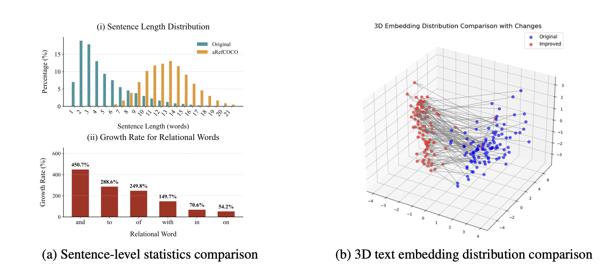
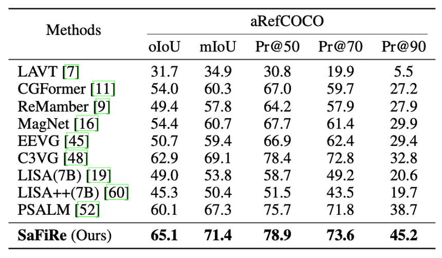
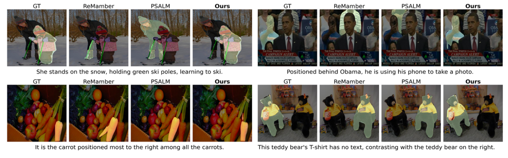

Overview of the SaFiRe Architecture. For each SFLayer, it consists of Saccade operation and Fixation operation. The Saccade operation corresponds to the phase of global semantic understanding. It enables the model to rapidly scan both visual and textual inputs, establishing a coarse-level alignment between the two modalities. The Fixation operation mirrors the cross-modal refinement phase. It allows the model to attend to specific local visual regions while re-examining the textual input, facilitating the extraction of fine-grained, task-relevant information.
Models Trained on Single Datasets

Traditional Benchmarks. This table presents a comparison of our SaFiRe with state-of-the-art methods on the RefCOCO, RefCOCO+, and RefCOCOg datasets with oIoU metric, where all models are trained independently on single datasets. Results show that SaFiRe outperforms all other methods across all datasets. In particular, SaFiRe achieved a great improvement on RefCOCOg, where the task involves more complex and fine-grained textual descriptions compared to RefCOCO.
Models Trained on Mixed Datasets

Mixed Datasets Training. This table compares SaFiRe with recent SOTA methods trained under mixed-data configuration. The precise dataset mixtures differ across methods. To avoid conflating performance with training-corpus choices, we report each baseline under its official training configuration. In general, these models draw on subsets and combinations of widely used referring-expression and segmentation datasets, such as RefCOCO, RefCOCO+, RefCOCOg, COCO, Object365, ADE20K, COCO-Stuff, PACO-LVIS, PASCAL-Part, GranD, VOC2010, MUSE, gRefCOCO, and COCO-Interactive. Our training corpus follows a mixed-data setup based on the RefCOCO series and COCO-Stuff, which is comparatively smaller. However, the results show that SaFiRe achieves competitive results on all three benchmarks, particularly excelling on the more challenging RefCOCOg and RefCOCO+ benchmarks. Notably, it surpasses several SAM-enabled models (e.g., u-LLaVA, GSVA) across multiple splits.
We introduce aRefCOCO (ambiguous RefCOCO), a test-only benchmark constructed by reannotating a subset of images from the RefCOCO and RefCOCOg test splits with more challenging referring expressions. It is specifically designed to evaluate model performance on object-distracting and category-implicit scenarios.
Sentence-Level Statistics and Text Embedding Distributions Comparison

Quantitative comparisons highlight the distinct features of aRefCOCO compared to the original descriptions: Description Length. aRefCOCO contains a higher proportion of longer sentences and significantly reduces short, phrase-like descriptions, making it more relevant for real-world RIS tasks. Relational Words. There is a significant increase in relational words, particularly prepositions, contributing to more structurally and semantically complex sentences. Text Embedding Distribution. The aRefCOCO embeddings show a clear shift from their original counterparts, indicating that the rewritten descriptions introduce substantial semantic variations rather than minor lexical edits.
Zero-shot Evaluation on aRefCOCO

We conduct a zero-shot transfer evaluation of different models on the aRefCOCO. The expressions in aRefCOCO are notably ambiguous and more complex, frequently lacking explicit category indications and containing more distractors, which demands a sophisticated cross-modal understanding for precise segmentation. For fair comparison, all models have NOT been trained on aRefCOCO. As shown in above table, our model achieves the best overall performance on aRefCOCO, demonstrating its strong ability to precisely localize referred objects under ambiguous language conditions.
Qualitative Comparison on aRefCOCO

We compare SaFiRe with other SOTA methods on challenging cases from aRefCOCO, demonstrating our method's superior capability in handling referential ambiguity. The visualizations reveal that SaFiRe achieves more accurate segmentation results in scenarios where multiple similar objects coexist and the referring expression lacks explicit category information. While baseline methods often struggle with ambiguous expressions and may segment incorrect objects or fail to distinguish subtle differences.
@article{mao2025safire,
title={SaFiRe: Saccade-Fixation Reiteration with Mamba for Referring Image Segmentation},
author={Zhenjie Mao and Yuhuan Yang and Chaofan Ma and Dongsheng Jiang and Jiangchao Yao and Ya Zhang and Yanfeng Wang},
journal={Advances in Neural Information Processing Systems (NeurIPS)},
year={2025}
}